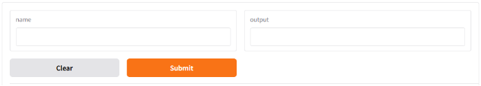
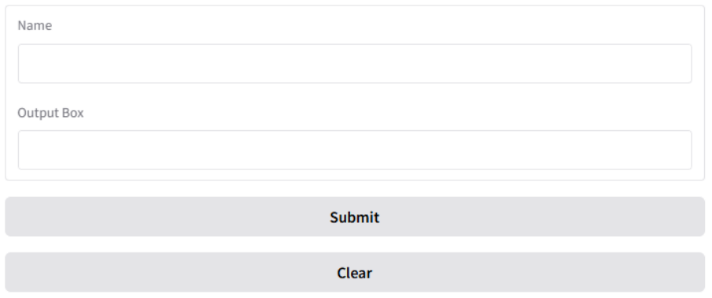

Quick Start with gr.Interface
Let’s start from a simplest demo.
1 | import gradio as gr |
gr.Interface allows us to define a UI for your_function. The type of inputs and outputs must be predefined. Gradio allows 'text' 'image' 'number' 'audio' 'video' for both inputs and outputs.
Other types that might be useful:
Input-only:
'slider'- inputting values within a specified range using a slider'checkbox'- boolean input'radio'- single selection input'dropdown'- selecting from a dropdown menu
Output-only:
'label'- displaying labels or classification results'plot'- displaying charts (e.g., Matplotlib or Plotly plots)
Multiple inputs and outputs by putting types into a list, for example:
1 | import gradio as gr |
After running the python script, we can Ctrl + Click http://localhost:7860 from your terminal, then you can see a interface in our browser like this:
Now we have everything for building a clear-enough UI for any target function. Let me give some example:
1 | gr.Interface(fn=your_function, inputs="image", outputs="label") # A classification model |
The only problem now is layouts, right? When the UI is complex, not having layouts can be uncomfortable. In fact, there are many other functions that cannot be implemented with gr.Interface, such as getting information about mouse clicks, triggering inference in a way other than a button, and generating a different number of output boxes depending on the input. When you find that the simple Interface function no longer meets your needs, you may want to try gr.Blocks.
Building Better Interfaces with gr.Blocks
One of the most noticeable changes when using gr.Blocks is the ability to design the layout. We can now have more control over how the UI is arranged. Let’s first implement the example we just saw with gr.Interface using gr.Blocks.
A Simple Gradio Demo with gr.Blocks
Here is a simple demo includes a text input, an output box, a submit button, and a clear button.
1 | import gradio as gr |
The UI looks like this:
Does the layout look a bit different? Well, the basic functionality is the same as in the previous example. In this case, we define a gr.Blocks, which is like taking a sheet of A4 paper when you start working on an assignment. Then we create two gr.Textbox and two gr.Button on the paper, and they are automatically arranged within this block area.
Layout
You can design your layout using gr.Column and gr.Row to make it look like the UIs you see on Hugging Face. For example:
1 | import gradio as gr |
Like the following code, you can divide gr.Blocks into multiple horizontal sub-areas, and then further divide one of these sub-areas into multiple vertical sub-areas.
1 | with gr.Blocks() as demo: |
To limit the shape of a block, try:
1 | with gr.Column(scale=2, min_width=300) |
Function Trigger Methods
Although my favorite is Button, there are other ways to trigger your function. You can try using an event listener or triggering the function by pressing ENTER. The former can monitor changes in the input box in real-time, while the latter replaces the button with a keyboard key.
1 | # Button |
You can also set multiple triggers using gr.Blocks().
1 | gr.on(triggers=[name.submit, greet_btn.click], fn=greet, inputs=name, outputs=output).then(clear_name, outputs=[name]) |
You may use .then(clear_name, outputs=[name]) to call a second function after ‘greet’ has been triggered. Here, outputs=[name] means that the return value will update the “name” input box. The .then() operation can actually be written inside greet, making greet look cleaner, but it is not mandatory.
Controling the visibility of a sub-block
1 | import gradio as gr |
In this example, clicking the submit_btn triggers the submit function. The change in visibility is specified as one of the outputs.
You can modify the visibility of individual components or an entire block. If it applies to a block, you need to define a variable for it when creating the block.
Determine the Output Boxes Based on Input
If you are unsure how many outputs will be generated before entering your inputs, you can use gr.render().
1 | import gradio as gr |
@gr.render(inputs=input_text) is actually listening to the change in input_text if there is no trigger defined. You can use this listening mechanism to create some interesting designs. For example:
1 | import gradio as gr |
Here, gr.State() allows you to listen to events in the state variable. If you are adding a new box through gr.render() but have already input something into the existing boxes, remember to set key= to maintain the content in the displayed boxes.
Provide Some Examples on the UI
If you want to show users how to use your UI, you can use gr.Examples() to provide pre-filled example inputs. This helps users understand how to interact with your interface more effectively.
1 | import gradio as gr |
In this example, gr.Examples() provides a set of predefined input combinations. Users can click on any example to automatically fill the input boxes with those values. This feature makes it easier for users to test different scenarios and understand how the calculator works.
Select a Point on the gr.Image or gr.Dataframe
If you want to click on an image to get the coordinates of where you clicked relative to the image, you can use gr.select() to achieve this.
1 | def get_select_coords(img, evt: gr.SelectData): |
Similarly, gr.Dataframe is a table-format component that also supports the select method.
Summary of Useful Functions for gr.Blocks
1 | gr.Row(scale=1, min_width=300) |